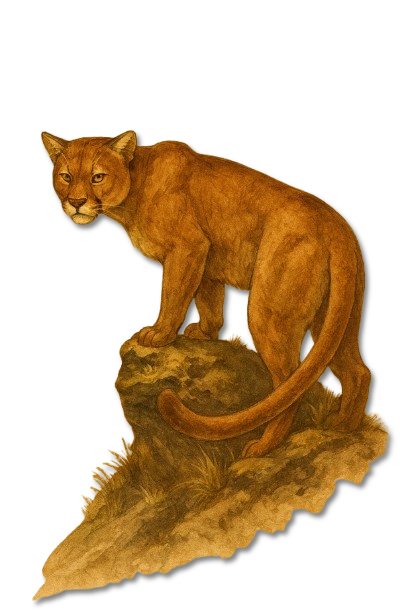
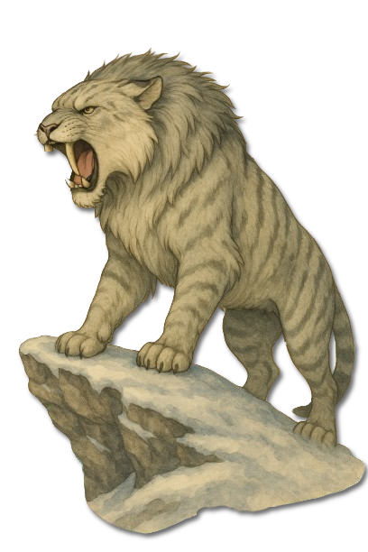
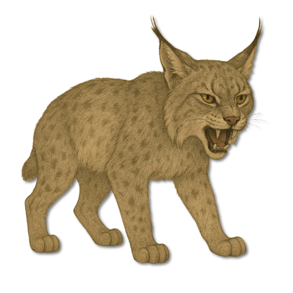

Die ersten drei Bildtafeln des neuen Katzenregisters zeigen, wie stark Landschaft und Klima die Raubkatzen Estrylls formen. Ihre Einzeldossiers sind vorgemerkt und werden mit den nächsten Quellen erschlossen.
Raubkatzen Estrylls · Tafel des naturkundlichen Archivs
❧
„Wo eine Raubkatze sichtbar wird, hat sie die Begegnung meist längst entschieden.“Cenyrischer Fährtenleserspruch
❧
I
Einführung
Raubkatzen sind Einzeljäger von großer Geduld. Sie lesen Gelände, Wind und Deckung, sparen ihre Kraft über Stunden und entscheiden eine Jagd in wenigen Augenblicken. In den Archiven werden sie deshalb weniger nach Größe als nach Lebensraum, Jagdweise und Verhältnis zu Siedlungen unterschieden.
Die bekannten Formen Estrylls reichen von waldnahen Katzen Cenyrs über die großen Schneejäger des Nordens bis zu kleineren, äußerst wachsamen Luchsen. Trotz gemeinsamer Merkmale verlangt jede Art eine eigene Gefahreneinschätzung.
II
Spuren & Beobachtung
Raubkatzen vermeiden unnötige Kämpfe. Frische Kratzspuren, verdeckte Risse und regelmäßig genutzte Aussichtspunkte sind daher verlässlichere Hinweise als direkte Sichtungen. Wer eine Katze überrascht, befindet sich meist bereits tief in ihrem Jagdraum.
Für künftige Dossiers werden Körperbau, bevorzugte Beute, Reviergröße, Aktivitätszeit und der Umgang mit Menschen getrennt erhoben. Bis diese Berichte vorliegen, bleiben die drei Arten als bestätigte Bild- und Herkunftsnachweise im Register.
III
Vorläufige Bestimmung
Die ersten drei Bildtafeln
Die Einordnung stützt sich vorerst auf Namen, Herkunft und sichtbare Merkmale der gelieferten Tafeln. Verhaltenswerte folgen erst mit den vollständigen Arttexten.
Cenyr · Estryll
Llewroth
Große, langgliedrige Wald- und Felskatze
Einfarbig warmes Fell und langer Balanceschwanz
Eigenes Dossier vorgemerkt
Nördliches Estryll
Säbelzahntiger
Massiger Körperbau für Kälte und Schnee
Auffällige verlängerte Eckzähne
Eigenes Dossier vorgemerkt
Estryll
Estryller Luchs
Kompakte Katze mit Ohrpinseln und kurzem Schwanz
Für Deckung und unwegsame Wälder gebaut
Eigenes Dossier vorgemerkt
IV · Systematik & Einzeldossiers
Vorgemerkte Raubkatzen
Diese drei Tafeln bilden den Anfang des Registers. Die Karten sind bereits vorbereitet; ihre ausführlichen Dossiers werden später verknüpft.
01 · Erste gesicherte Tafeln
Raubkatzen Estrylls
Drei Arten aus den Wäldern, Gebirgen und Schneelanden Estrylls.

Cenyr · Estryll
Llewroth
Eine große cenyrische Raubkatze mit langem Körper und aufmerksamem Blick.
Dossier vorgemerkt

Nördliches Estryll · Schneegebiete
Säbelzahntiger
Ein massiger Schneejäger, dessen verlängerte Eckzähne seine Silhouette bestimmen.
Dossier vorgemerkt

Estryll
Estryller Luchs
Eine kompakte, wachsame Katze der bewaldeten und felsigen Regionen.